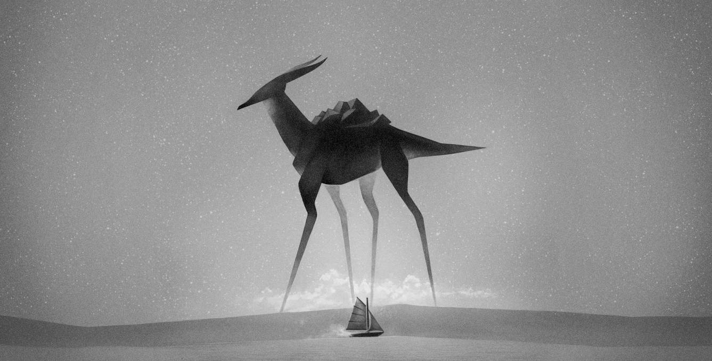
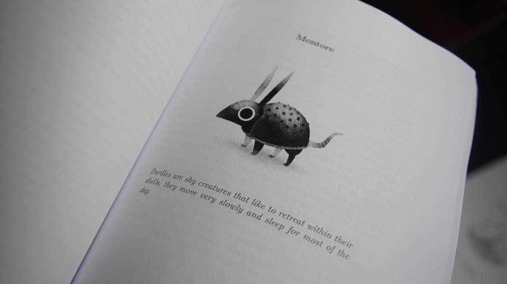
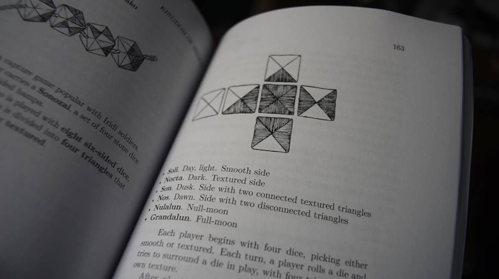
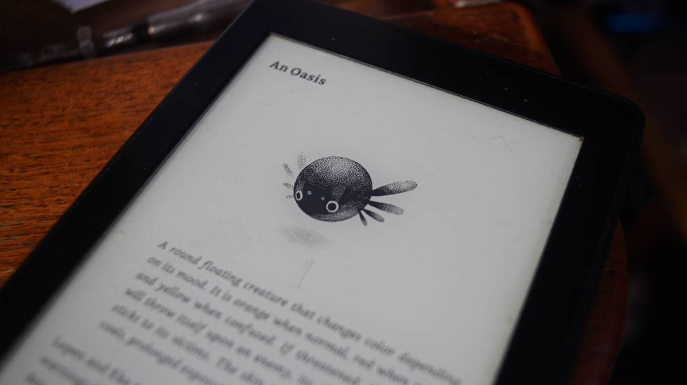
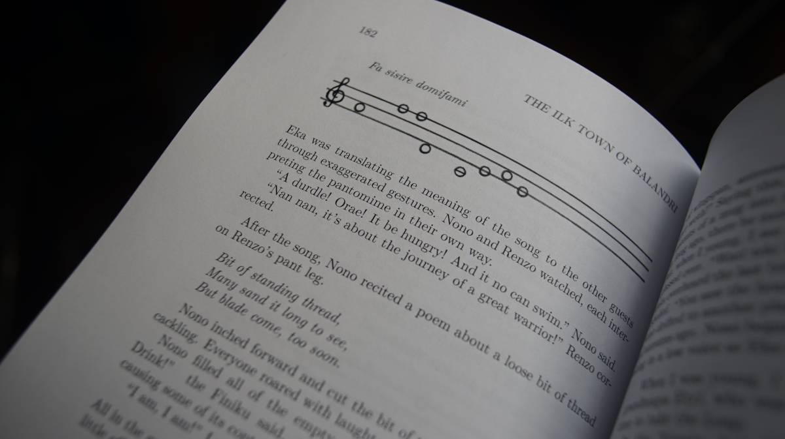
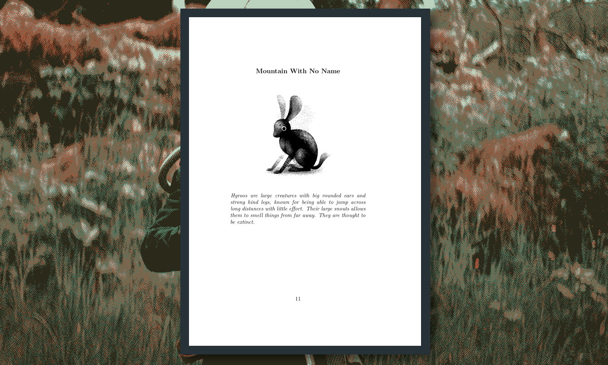
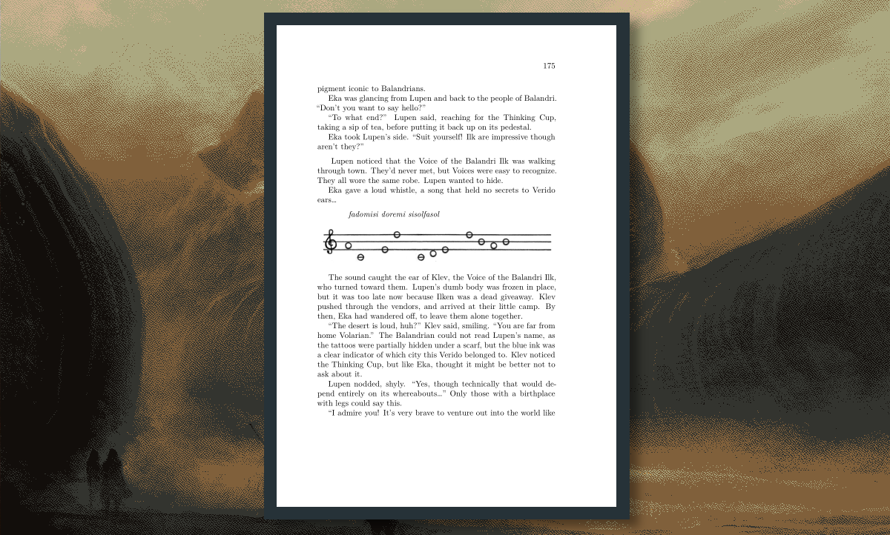
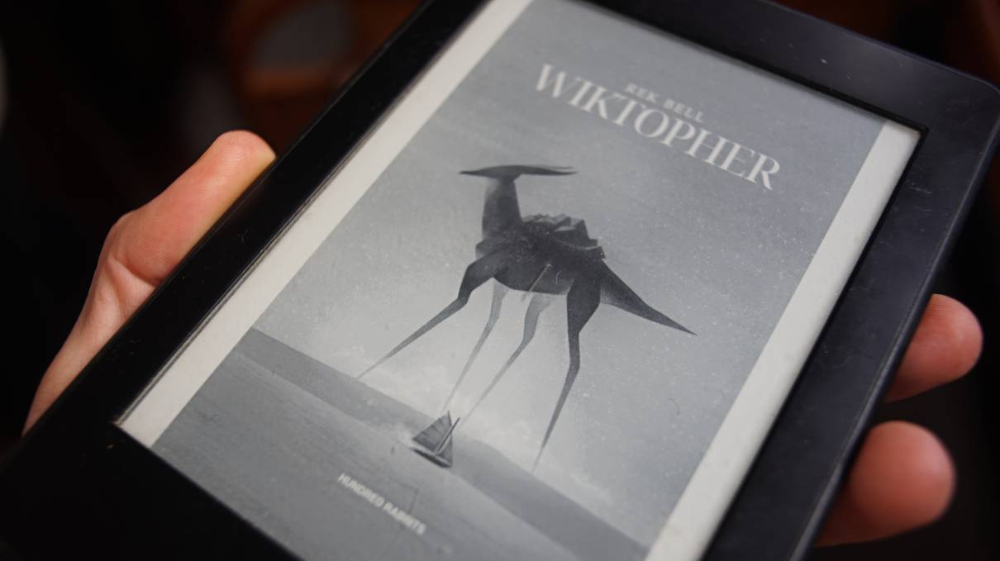

wiktopher
Wiktopher follows the story of Lupen and Eka as they sandfin across the Soronan Desert and learn about the varied lives of its inhabitants. The book features illustrations of creatures, plants, maps and languages of the different cultures of its world. Themes include cultural identity, food preservation, community, low-tech and more.
It was written while circumnavigating the Pacific Ocean by sail, and over many summers in the Salish Sea. It was written by Rek Bell, and edited by Devine Lu Linvega. The writing should be appropriate for children of 10 and up.
- 237 pages
- 16 chapters
You can read the first two chapters of the finished story here[4.4 MiB] as a PDF. If you liked what you've read, consider reading the rest.
Paperback release

Wiktopher is a 237-page-long paperback book, written in English. It is in black and white, and measures 5.83 x 8.27 in / 148 x 210 mm.
The book has a matte cover, and is sold for:
$14.76 USD, €13.60 EUR, $22.33 AUD, £11.33 GBP, and $22.15 CAD.
Buy Wiktopher paperback
The book is printed on demand with Lulu.com. They work with printers all over the world, so that most copies are produced locally and travel relatively short distances. It can take 3 to 5 work days to print the book. Since the books are printed, packaged, and shipped by humans, mistakes may happen. If your book arrives in less-than-perfect condition, contact Lulu.com with images of shipping damage or printing errors, and they will send you another copy.
E-book release

The e-book version of Wiktopher is formatted for most e-readers (EPUB, mobi and PDF).
Buy Wiktopher e-book | $5.00 USDThe book is open source, but buying it is a way of supporting our work.
production
The story of Wiktopher is an elaboration of a short film Rek did in 2008 called Uno. This project was supposed to expand into a comic, which included many of the Wiktopher characters like Eka, Uno, Zukka, Lupen and Ten. Rek produced a lot of exploratory art for the project, but the comic was never completed.
Rek began writing a story with those same characters while in Tahiti, French Polynesia in 2017. Because of laptop problems (see tools ecosystem), drawing using heavy software like Photoshop was near impossible, and so we were forced to consider other hobbies. The story is inspired from our own travels and discoveries. Left was created during this time, to make the writing of this story possible.
The writing of the book was completed on October 2nd 2021, but we finished corrections on November 15th 2023. Devine did a lot of editing for this project. The book was published digitally on November 25th 2023.
{kind=link}
Pandoc and Tectonic were used to convert Markdown(main text is written in Markdown) and TeX files into PDF files, and to generate an EPUB. A mobi file was generated from the EPUB file using Calibre. Disclaimer: Rek doesn't master the use of TeX(but their skills get better with every published book, this is Rek's second book produced with TeX and Pandoc), there are probably better ways to produce a book, reference the project's source files at your own risk.
Screenshots and photos
   Artwork